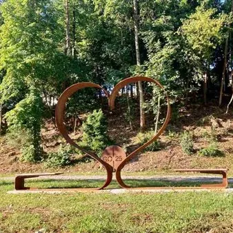

da mer 7 ott a mer 18 nov
Verde Capitale
Ritorna l'iniziativa Verde Capitale, che nella sua seconda edizione vede in calendario i seguenti programmi: Anteprima di Verde Capitale mercoledì 7 ottobre ore 18.00 - Museo Comel, via Brigata Avellino 4 “Il mare scritto nella pietra. Viaggio nei calcarei cretacei del monte…
 Indicazioni
Indicazioni
- Costi e prenotazioni
- Costo non indicato · Prenotazione non indicata
- Programma
- Programma da verificare. Apri la fonte ufficiale per orari e possibili aggiornamenti.
- In caso di maltempo
- Nessuna indicazione specifica pubblicata.
- Note
- Acquisito automaticamente dalla fonte.
L’EVENTO
Descrizione completa
Ritorna l'iniziativa Verde Capitale, che nella sua seconda edizione vede in calendario i seguenti programmi:
Anteprima di Verde Capitale
mercoledì 7 ottobre
ore 18.00 - Museo Comel, via Brigata Avellino 4
“Il mare scritto nella pietra. Viaggio nei calcarei cretacei del monte Sabotino”
Conferenza con Giorgio Tunis e Deborah Spinola
giovedì 8 ottobre
ore 18.00 - Sala Dora Bassi, via Garibaldi 7
Inaugurazione mostra “Dove volano le api”, a cura dell’associazione Mitteldream ArteGorizia
venerdì 9 ottobre
ore 11.00 - Atrio Municipio
Inaugurazione mostra “Arte per il pianeta”, ideata da Prologo associazione culturale per la promozione delle Arti Contemporanee in occasione di Verde Capitale 2026. Opere di Renza Moreale (Oltre le diversità); Annalisa Iuri (Curriculum vitae), Vera Elvira Mauri (Fiducia) e Giuditta Dessy (Speranza)
“I lepidotteri del Monte Sabotino”
Conferenza con Lucio Miorin
sabato 10 ottobre
ore 9.30 - Giardini Pubblici, corso Verdi
“Gli antichi canali e gli affreschi votivi”
Passeggiata a cura della Uisp. Luogo di ritrovo Giardini Pubblici
ore 10.00- Parco del Municipio
4° Benedizione degli animali
dalle ore 10.00 alle ore 10.45 iscrizioni alle varie categorie della sfilata, a cura de La Cuccia. In collaborazione con le associazioni Zampette Cormonesi e Gli Amici di Poldo. Alle 11 al via la sfilata, che culminerà nelle premiazioni.
ore 12.00 - benedizione degli animali da parte di Don Fulvio Marcioni. Come nelle edizioni precedenti sarà richiesto che per la durata dell’evento gli animali siano tenuti al guinzaglio e che si disponga di museruola e si raccomanda di portare sacchetti per la raccolta delle deiezioni.
Verde Capitale
martedì 13 ottobre
ore 16.00 – Parco Coronini Cronberg, via Coronini 1
“Alle origini dello spettacolare giardino dei conti, fra maestosi alberi, vialetti, statue, scalinate, nicchie, pergole e colonnati”
Passeggiata con Cristina Bragaglia.
ore 17.00 - Palazzo Coronini Cronberg, via Coronini 1
Inaugurazione della seconda edizione di Verde Capitale
Saluto del sindaco di Gorizia, Rodolfo Ziberna, e del vicesindaco di Nova Gorica, Tomaž Horvat.
ore 7.15 - Palazzo Coronini, via Coronini 1
Presentazione Caccia al tesoro: protagoniste le piante resilienti e le piante più sensibili agli eventi climatici.
A seguire: il clima che cambia, cambiano le piante per giardini e terrazzi.
Conferenza con il botanico Stefano Martellos (Università degli studi di Trieste)
mercoledì 14 ottobre
ore 14.00 - Giardino Viatori, via Forte del Bosco 28
“Il giardino si prepara all’inverno. Tra i gesti dei giardinieri e le nuove sfide del clima”
L’autunno non è solo una tavolozza di colori straordinari, dal giallo del Ginkgo ai toni caldi di Liquidambar e Lagerstroemie, ma un momento cruciale del giardino. Alla scoperta della natura in dormienza.
Organizzato da Rete d’Impresa goGREEN con Manuel Rosin.
ore 16.30 - Palazzo de Grazia, via Oberdan 15
“Cosa ci raccontano gli esseri viventi più antichi della città. Indagine sugli alberi monumentali di Gorizia”
Conferenza con l’agronomo specialista in arredo urbano Pierpaolo Pischiutta e Liubina Debeni.
ore 17.30- Palazzo de Grazia, via Oberdan 15
“Funghi: tra ecosistema, nutrizione e clima”
Registi occulti degli ecosistemi terrestri i funghi decompongono la materia organica, creano una vera e propria rete di comunicazione tra loro e le piante e sono capaci di degradare vari inquinanti ambientali. Dal punto di vista alimentare sono considerati un superfood perché poco calorici ma ricchi di nutrienti. I cambiamenti climatici, come l’ultima torrida estate, stanno influenzando i periodi della loro fruttificazione e quindi le raccolte
Conferenza con Paolo Bonnes, micologo iscritto al Registro Nazionale, titolare della Libreria Voltapagina di Gorizia.
giovedì 15 ottobre
ore 15. 00 - Bosco di castagni monumentali di via Franconia
Passeggiata con il proprietario Alessandro Zollia.
“Alla ricerca delle pietre di 50 milioni di anni nel castello di Gorizia”
Conferenza con il geologo Roberto Ferrari.
“Un mondo senza rifiuti? Viaggio nell’economica circolare”
Conferenza con Antonio Massarutto (direttore Master in Economia integrata dei rifiuti Università di Udine); Paolo Bevilacqua (docente Università di Trieste) e Flavio Gabrielcig (direttore Servizio disciplina gestione rifiuti e siti inquinati Regione FVG).
venerdì 16 ottobre
ore 10.00 - Giardini Pubblici, corso Verdi
Apertura della Casa dell’Ape: gli apicoltori racconteranno la vita delle api e faranno assaggiare i mieli degli alveari del territorio
ore 15.00 - Palazzo de Grazia, via Oberdan 15
“Ingegneria naturalistica in ambito urbano”
ore 16.00 - Palazzo de Grazia, via Oberdan 15
“Da Scopoli a Poldini. Flora, città e cambiamenti globali nel territorio goriziano”
Un viaggio attraverso oltre due secoli di esplorazioni botaniche per leggere le trasformazioni del paesaggio goriziano e comprendere le sfide dei cambiamenti climatici globali.
Conferenza con il botanico Francesco Boscutti e Sonia Kucler
ore 17.00 - Museo Comel, via Brigata Avellino 4
Viaggio fra i fossili del Tropico del Collio: visita guidata al museo in cui sono esposti reperti di oltre 54 milioni di anni fa
Con il geologo e direttore del museo Comel Giuliano Spangher.
“L’Universo incandescente all’origine del mondo”
Incontro con Steno Ferluga.
ore 18.00 - Palazzo de Grazia, via Oberdan 15
Spettacolo: “Versi, musica e parole sul cambiamento climatico”
Un percorso tra emozione e razionalità alla scoperta di un mondo che stiamo cambiando che vede protagonisti giovani studenti universitari
A cura di Stefano Martellos (Università degli studi di Trieste)
sabato 17 ottobre
ore 10.00 – Corso Italia
Radici e chiome del passato per il clima del futuro.
Passeggiata di 5,5 km fra storici viali alberati e quartieri residenziali, imparando a guardare le piante con occhi diversi. Prenotazione richiesta: sabrina.pellizon@ecoturismofvg.com
Con Sabrina Pellizon.
L’attività fisica nel verde “sfidando” i cambiamenti climatici
Conferenza con Enzo Dall’Osto, presidente Uisp.
La Nizza austriaca entra nella città del futuro. Presentazione delle linee guida del Piano del verde.
Come cambieranno piazze, viali, parchi e giardini nella Gorizia di domani.
Con il sindaco, Rodolfo Ziberna, e l’assessore comunale all’Ambiente, Francesco Del Sordi. Interverrà l’assessore regionale a Infrastrutture e territorio Cristina Amirante.
ore 17.00 - Palazzo de Grazia, via Oberdan 15
Abitare il fiume. Spazi sensibili in transizione. Esplorazioni progettuali per il parco urbano attrezzato dell’Isonzo a Gorizia. Fra i Ritter e l’Isonzo, rigenerazione urbana dell’Isola di Straccis
Con l’autore della tesi Alberto Silvestri e la relatrice Claudia Battaino (Università di Trento).
“Come affrontare l’impatto del caldo estremo negli edifici”
Con l’interior design Celia Stefania Centonze
domenica 18 ottobre
ore 10- Parco del Rafut
Passeggiata botanica sotto le chiome degli alberi
Con Tanja Grmovsek.
Fuori programma
ore 10.30 - Piazza Sant’Antonio
Luigi Spina, il goriziano che sfidò il muro di Berlino
Spettacolo itinerante scritto da Roberto Covaz. Organizzato da TerzoTeatro.
ore 11.30 - Palazzo de Grazia, via Oberdan 15
Dalle aiuole al piazzale della Casa Rossa, una città a misura di cambiamenti climatici
Conferenza con Lorenzo Rigonat e Luigi Di Dato
Spontanea e coltivata: la biodiversità di fronte al clima che cambia. Dalla resilienza della natura selvaggia fuori dal cancello alla sostenibilità degli spazi coltivati all’interno del giardino: un’esperienza per scoprire come il dialogo tra ambiente spontaneo e cura umana possa offrirci le chiavi per affrontare il cambiamento climatico.
Passeggiata con Sonia Kucler.
ore 16.00 - Giardino Viatori, via Forte del Bosco 28
Premiazioni Caccia al tesoro
Verde Capitale continua …
venerdì 23 ottobre
La terra racconta la sua storia. La terra radioattiva: le età del pianeta svelate dai radionuclidi.
Con Mario Favretto
Islanda: un geologo fra ghiacci e vulcani
Con Cristiano Mastroianni
mercoledì 18 novembre
ore 17.30 - Sala Dora Bassi, via Garibaldi 7
Affrontare i cambiamenti climatici, città in prima linea
Con Adriano Venudo, Luigi Di Dato e Chiara Gatta.
Gli eventi possono subire variazioni
IL PROGRAMMA
Programma e orari
Appuntamenti raccolti dalle fonti elencate. Dove manca un orario, non è ancora disponibile in questa scheda.
Programma pubblicato
- ore 18.00 -
- ore 11.00 -
- ore 9.30 -
- ore 10.00-
- ore 12.00
- ore 16.00
- ore 17.00
- ore 7.15
- ore 14.00
- ore 16.30
- ore 17.30-
- ore 15.00
- ore 10.30
- ore 11.30
INFORMAZIONI UTILI
Prima di partire
- Controllare la fonte prima di partire.
ORGANIZZAZIONE